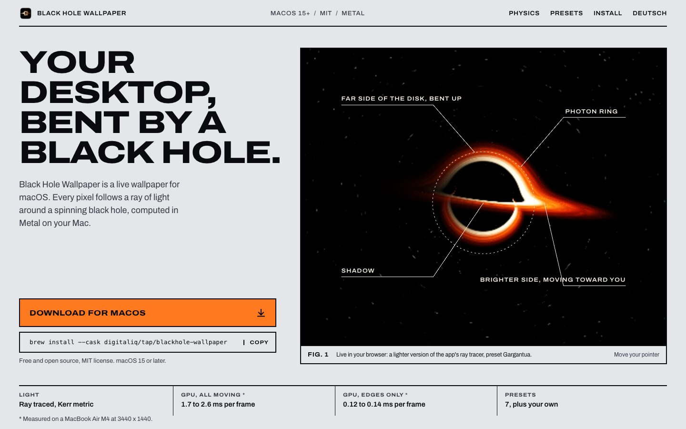
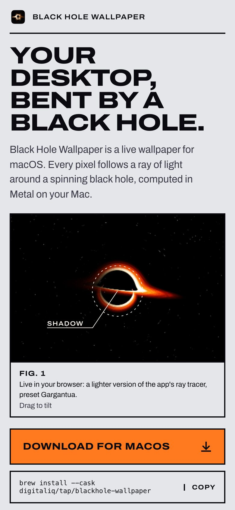
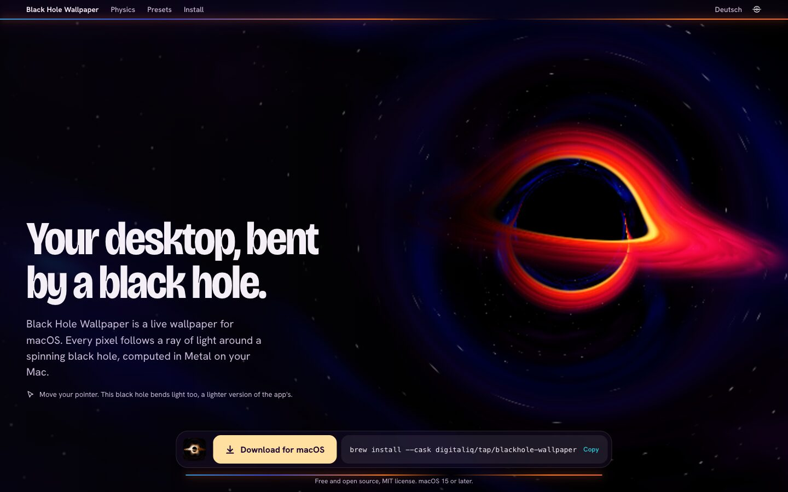
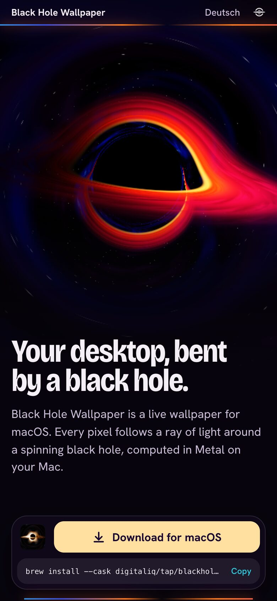

Black Hole Wallpaper: zwei Richtungen
Erste Bildschirmseite, Desktop (1440 x 900) und Handy (390 x 844). Das Loch ist in beiden live (three.js), die Bilder sind Screenshots aus Chrome. Details in website/richtungen.md.
A: Missionsakte (Empfehlung)
Die App als technisches Datenblatt. Helles Grau, schwarze Linien, Orange als Fläche, das Loch als „Fig. 1“ mit Leitlinien, darunter echte Messwerte.


B: Schreibtisch
Die Seite ist der Schreibtisch, den die App macht. Menüleiste und Dock mit fließenden Bändern, dazwischen das Loch über die ganze Fläche, Download im Dock.

